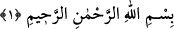
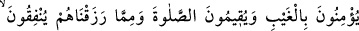
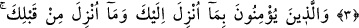
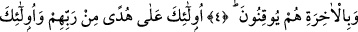
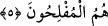
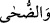
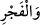
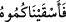

2. BAKARA SÛRESİ
1. Elif. Lâm. Mîm.
2. O kitap (Kur’ân); onda aslâ şüphe yoktur. O, müttakîler (sakınanlar ve
arınmak isteyenler) için bir yol göstericidir.
3. Onlar gayba inanırlar, namaz kılarlar, kendilerine verdiğimiz mallardan Allah
yolunda harcarlar.
4. Yine onlar, sana indirilene ve senden önce indirilene îmân ederler, âhıret
gününe de kesinkes inanırlar.
5. İşte onlar, Rablerinden gelen bir hidâyet üzeredirler ve kurtuluşa erenler de
ancak onlardır.
Sûre Hakkında
Bakara Sûresi, Medîne’de nâzil olmuştur ve 286 âyettir.
Kur’ân-ı Kerîm’deki en uzun ve en kısa sûre ile en uzun ve en kısa âyet hakkında
müfessirlerin görüşü şöyle özetlenebilir: En uzun sûre Bakara, en kısa sûre Kevserdir.
Âyetler içinde en uzun olanı Bakara sûresinin 282. âyetidir. Borçlarla ilgili
hükümlerden söz eden bu âyete “müdâyene” âyeti denir. En kısa âyet ise “__WORD__” ve “__WORD__” âyetleridir. En uzun kelime ise ( __WORD__ )’ dür. (el-Hicr, 15/22)
Kur’ân’da, Fâtiha’dan sonra gelen Bakara sûresinin en uzun sûre olmasının hikmeti
şöyle açıklanmıştır: Bu sûrede hükümler uzun uzun anlatılmış, ayrıntılı bir şekilde
açıklanmıştır. Çokca darb-ı meseller verilmiş ve deliller getirilmiştir. Bakara sûresinin
ihtivâ ettiği hükümleri başka hiçbir sûre ihtivâ etmez. Bundan dolayı Bakara sûresine
“Kur’ân çadırı” (Fustâtu’l-Kur’ân) bile denilmiştir.
Ahkâmül-Kur’ân adlı eserinde İbnü’l-Arabî[172] şöyle der: “Hocalarımdan birinin
Bakara’da bin emir, bin nehiy, bin hüküm, bin haber vardır. İçindeki ahkâmın çokluğu
sebebiyle bu sûreyi anlamak zor bir iştir, dediğini işittim. Bu yüzden İbn Ömer, onu